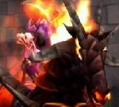

1er Août 2018
3ème jour
de la Décade du Lapin ( Lune de l'Esprit ) -
Accueil
Histoire
Chronologie officielle
Programme à venir
Récits
Légendes de Kirin Tor
Personnages
Célébrités
Guildes
Outils
Calendrier
Calendrier Illustré
Mod d'interface
Informations
Historiens
FAQ
Liens
Crédits
Les légendes de Kirin Tor
Progeria
Mail
:
mat_le_vrai@hotmail.com
Envoyer un MP
==> Afficher les personnages de Progeria
prozelia

Age
: ne compte plus
Sexe
: Femme
Race
: Mort-vivant
Faction
: Horde
Formation
: Démoniste
Plus d'infos sur prozelia >>>